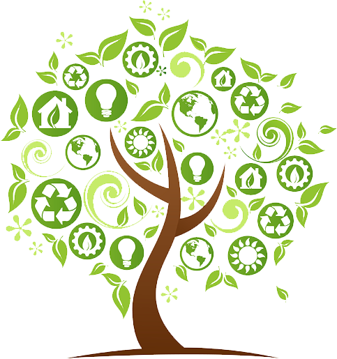

Sustentabilidade Ambiental
Definição de Sustentabilidade Ambiental
Sustentabilidade ambiental ou ecológica
Compreende a preservação e manutenção do meio ambiente, cujo principal objetivo é garantir que as necessidades das gerações futuras não sejam prejudicadas pelo uso indiscriminado dos recursos naturais na atualidadeConceito de Sustentabilidade ambiental
A sustentabilidade ambiental diz respeito à forma como nós, seres humanos, fazemos uso de todos os bens e recursos naturais disponíveis no planeta para suprir as nossas necessidades, mas sem que isso atrapalhe o fornecimento desses mesmos bens e recursos para as gerações que ainda estão por vir.